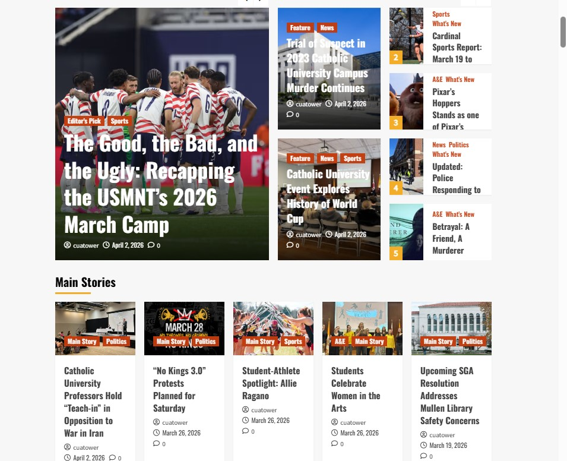
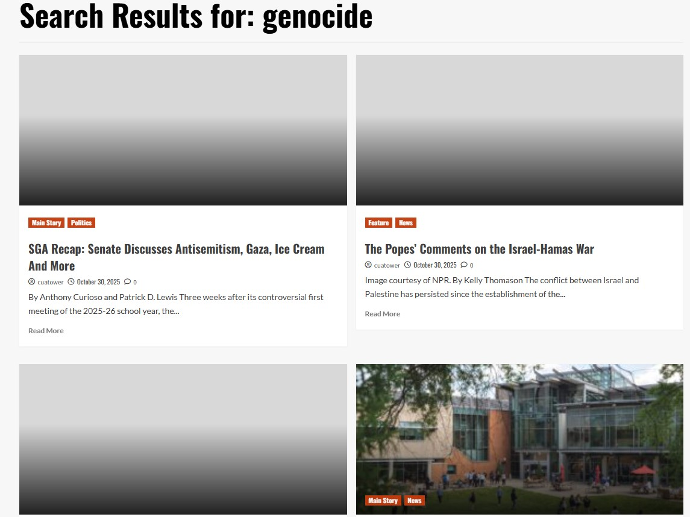

| Inputs | Outputs |
|---|---|
| Search bar | Newspaper articles of words used in search bar. |
| Images | The images available are part of links to full articles, other images when clicked do not have an output, but another image takes you to a blown-up version of one. |
| Drop Down Menu Bar | List of topics available on the website, each topic takes user to articles pertaining to that topic. |
| Flash News Carousel | The carousel shows updated news stories that are being reported. |
Using Nielsen’s heuristics guide, the website has visibility of system status. After the button of the links available are clicked, the website takes you to the proper location. This is a component of the website that makes it very trustworthy for its users and creates credibility. For an undergraduate teacher, they will be able to know that the website is capable and is not faulty. They are aware of what exactly it is that they are looking at when using this site. The user can safely navigate the website and expect to have a user-friendly experience that is not misleading. The website is consistent with its appearance and the way in which its information is delivered. Each page has the same aesthetic, with articles listed depending on if it is the “main stories’, a search result, or topic selection from the menu bar. For an example of a topic proposal on “genocide”, using the search bar that is available, the website takes you to news articles on current events revolving around war, political unrest and things that pertain to genocide. Additional research would be required as the forefront articles available are not solely about genocide but have some information pertaining genocide available. The “war” information is possible to find with the websites simplistic design and follows Nielsen’s heuristic of aesthetic and minimalist design. Although the design is minimalist, the information relies heavily on sports media, which is a design in its own way. It takes away from other news as the page is oversaturated with information about sports. The design also could have more topics on the home page as it makes the school look like they are overly interested in sports, or even campus crime. The website should be a representation of the entire school. The user will not get stuck on a part of the website that cannot take them back to their original starting point. The links also keep the website open, so you can click on an article but still have access to the search bar or menu bar at the top of the page. Help and Documentation is missing on the website though. There is not much if the user wants to connect with a publisher or creator to discuss information or help with the website.
Strengths: User - friendly with user control available. Design is minimalistic and offers consistency. Weaknesses: Design is overly reliant on sports media and campus crime. There is not a clear location for user support in terms of IT or help with the website, it assumes usability to be capable based upon its layout.


The results were different as the observer did not have enough interest to remain on the website for the allocated time. Both myself and the observer did agree that the website was a bit messy and overall needed more organization. The observer did achieve nielson flexibility and efficiency of use as well as user control and freedom. The observer was able to navigate and make an assessment from one glance of the screen. The observer did not complain and scrolled through without any problems.